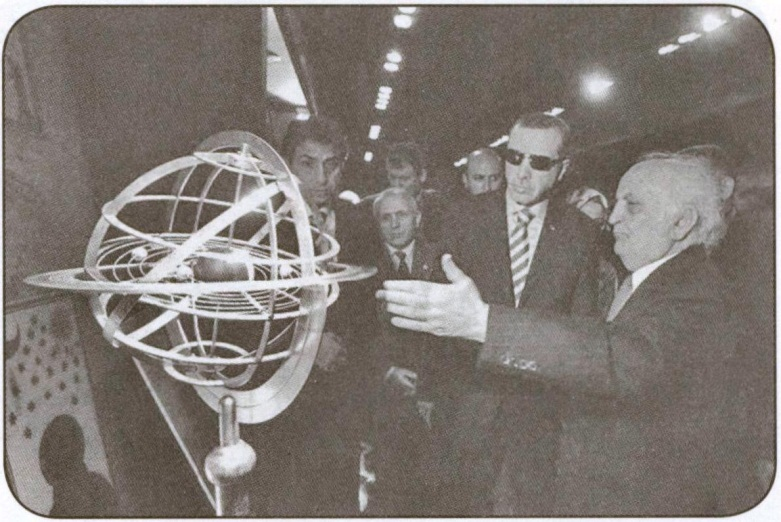
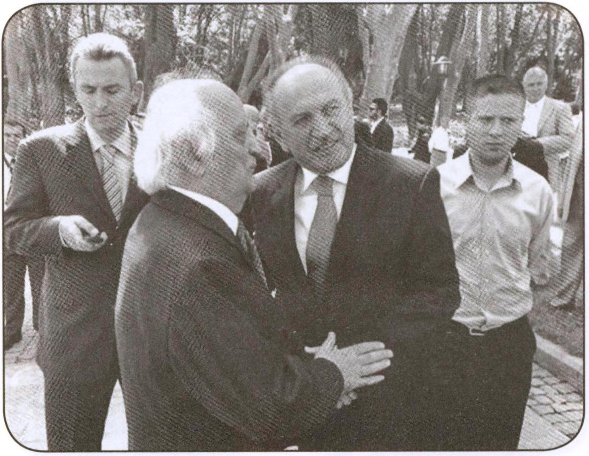

Onuncu yüzyılda Müslüman astronomların bazılarının dünyanın kendi etrafında döndüğü görüşünü gösteren bir platenaryum

Müze’nin açılışı münasebetiyle İstanbul Büyükşehir Belediye Başkanı Sayın Dr. Kadir Topbaş ve Prof. Dr. Fuat Sezgin bir arada